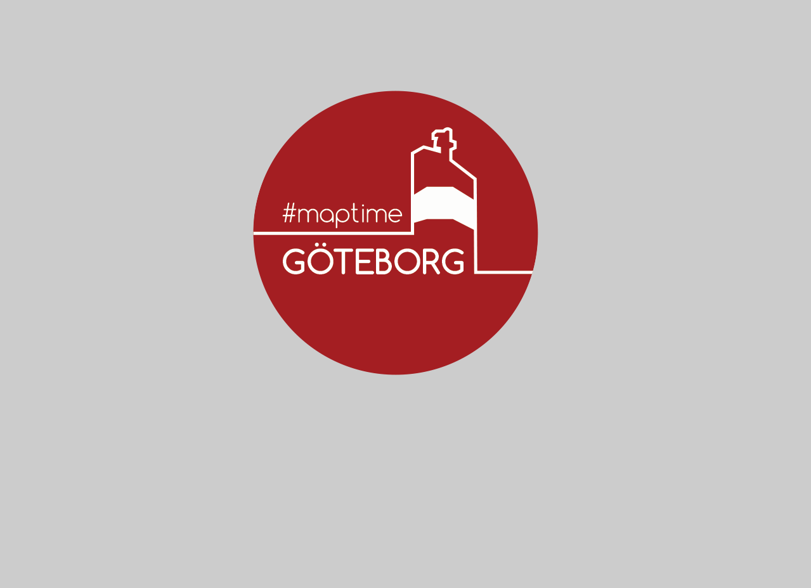
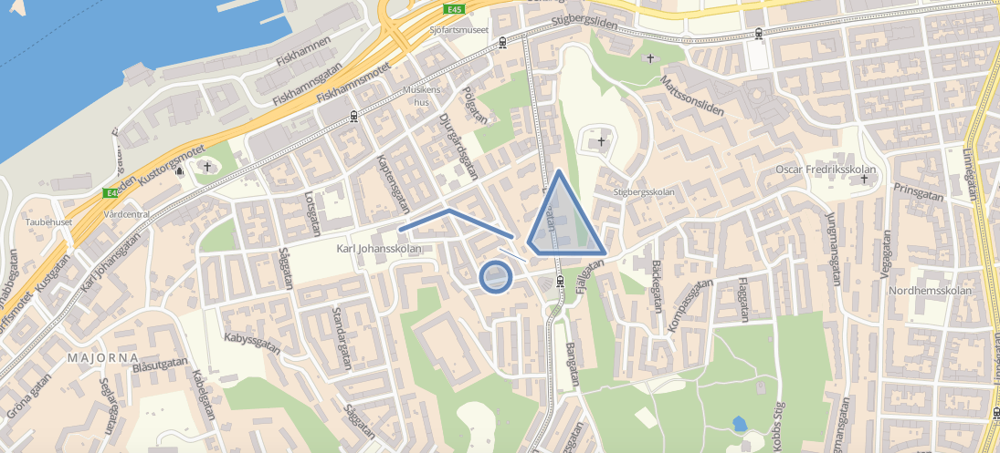
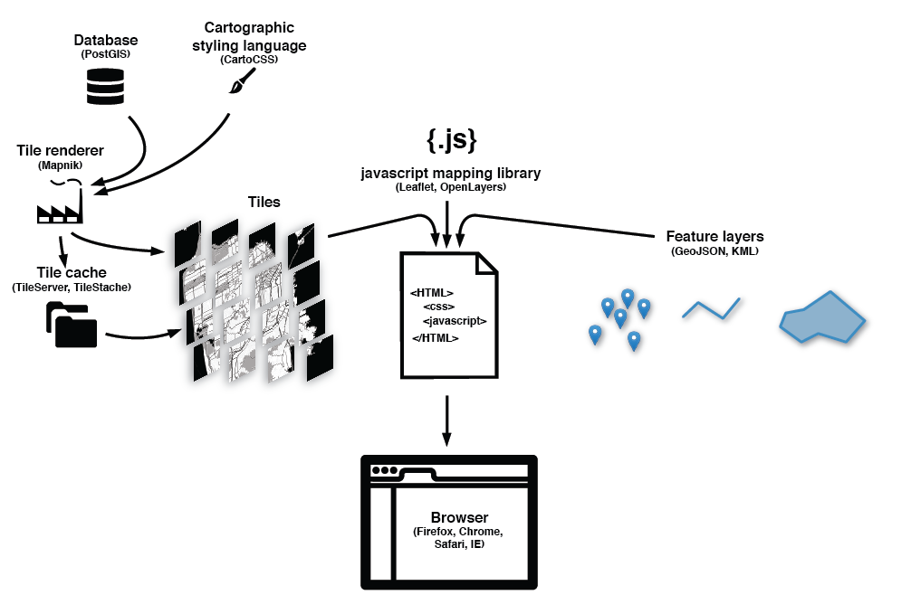

Welcome to Maptime GBG!
what is Maptime? what are we doing here?
So, let's talk about web maps!
I will talk about the basic principles, some history and common concepts
Hmm, what is a web map?
A web map lets you navigate a map with a single continuous system. It is an interactive map (this can be discussed).
Web mapping usually involves a web browser capable of client server interaction.
Like...
Before we had web maps we had analog maps like paper maps and atlases.
How did we get here?
The first maps on the web were sloooow
Could require a full page refresh to scroll and zoom. Always aligned to tile boundaries.
In 2005 we got Google Maps. The tile revolution!
They made it faster and it was easy for people to integrate google map services to their own web sites. This made it very popular!
So, tile revolution?
Tiles = one large image from many small images (tiles)!
We store multiple images of the same area at different zoom levels. When displaying map, only the images of the current area are needed. All tiles are the same size, usually 256x256px
This means, web maps using tiles only loads the tiles that are on your screen. A smart map will also load those along the top, bottom, left and right = slippy map
Zoom levels all have its own set of tiles starting with one tile at zoom level 0 and which increase exponentially for each zoom level.
Tiles are usually rendered in advanced and stored in a cache
Basically map tiles are images on the web
In a web map these tiles are the base layer (lets say they are raster tiles for now).
We can put layers (content layer/feature layer) on the base layer, like markers, they are often vector layers, these are intractable!

I have simplified the story a little… Tiles doesn’t have to be raster tiles, they can be vector tiles…..
Vector tiles are similar to raster tiles but instead of raster images the data returned is a vector representation of the features in the tile.
For vector layers you can check out
GeoJSON.

To show the map in the browser commonly a Javascript library is used like
leaflet or
openlayersThe javascript library grabs the tiles, adds content layers and handles interaction.
A simple web map can be seen
here
I could go on forever with this, but i'll stop here!
Thank you!
{kind=link}